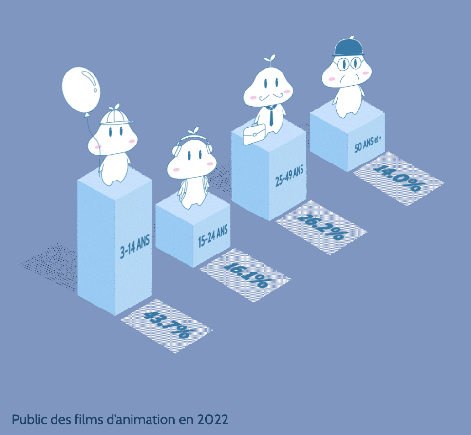

CINEMATION
Conception et développement d'un site web consacré au cinéma d'animation, associant visualisation de données, développement web et motion design. L'objectif : présenter des informations sur le cinéma à travers des contenus visuels et interactifs.

Un site autour du cinéma d'animation
Un projet universitaire consistant à concevoir un site one-page sur le thème du cinéma, en intégrant plusieurs formes de visualisation et de création graphique.
Réalisé de manière individuelle, CINEMATION m'a amenée à concevoir et développer un site web complet, de sa structure à son identité visuelle.
Le contenu porte sur différents aspects du cinéma d'animation : les films, les studios, les techniques d'animation, les récompenses et les évolutions du secteur.
Une attention particulière a été portée à la présentation des informations, avec l'intégration de graphiques interactifs et la création de visualisations animées.
Donner du sens aux données par le visuel
Les graphiques permettent de synthétiser des informations, de comparer des valeurs et de faire ressortir des évolutions liées au cinéma d'animation.
Budgets et recettes des films d'animation
Visualisation 01
Un graphique comparatif mettant en regard les budgets de production et les recettes mondiales de plusieurs films d'animation. Il permet de visualiser les écarts entre investissement initial et résultats au box-office.
Évolution des sorties de films selon leur origine
Visualisation 02
Un graphique en courbes présentant l'évolution du nombre de films d'animation sortis dans les salles françaises, répartis selon leur origine géographique.
De la donnée à sa représentation
Le projet repose sur différentes étapes de conception, depuis l'organisation du contenu jusqu'à son intégration dans une interface web.
Structurer l'information
Organiser les contenus autour de plusieurs thématiques du cinéma d'animation et préparer les données à présenter.
Visualiser les données
Choisir des représentations graphiques adaptées pour comparer des indicateurs et rendre les informations plus faciles à interpréter.
Intégrer au site
Développer une interface one-page et intégrer les visualisations dans une expérience de navigation cohérente.
Explorer d'autres formes de visualisation
En complément des graphiques interactifs, le projet comprend des représentations graphiques conçues et animées pour présenter certaines informations de manière plus visuelle.

Exemple de création visuelle réalisée pour le site.
Intégration des éléments graphiques dans l'univers du site.
Outils et compétences mobilisés
Conception, développement front-end et création de visualisations pour un site web interactif.